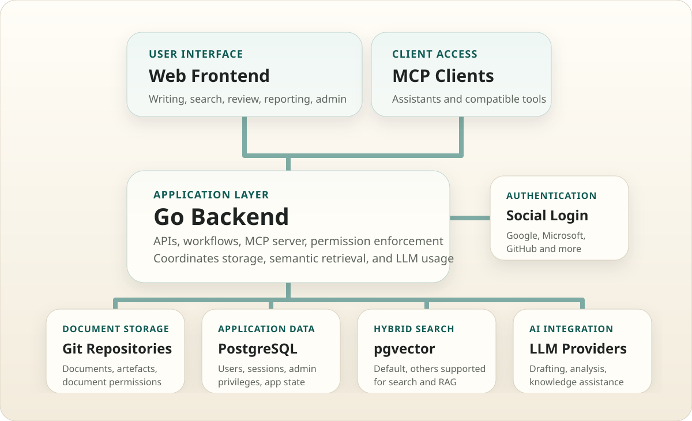

Modern web tech stack
A modern React frontend handles the interactive web experience. A Go backend provides the APIs, workflows, and high scalability.
Architecture
Admont combines a web frontend, a Go backend, Git repositories, PostgreSQL, semantic search, LLM integration, and an MCP server. This page shows the high-level shape only. The docs contain the implementation details.
Overview
The web frontend and MCP clients talk to the Go backend. The backend includes the MCP server and coordinates authentication, storage, search, permissions, and LLM usage.

Architecture Principles
A modern React frontend handles the interactive web experience. A Go backend provides the APIs, workflows, and high scalability.
Social login starts in the frontend and completes through the backend, which manages identity, sessions, and provider integration.
Git repositories hold the actual documents, artefacts, and document access permissions, which keeps the content portable and versioned in familiar tooling.
PostgreSQL stores structured application data such as users, sessions, and administrative privileges without turning the document layer into database rows.
Combines keyword and semantic search. Supports pgvector natively, as well as providers like Elasticsearch and Typesense. Used for both user search and RAG across the knowledge base.
Simple integration with one or more LLM providers. Major providers are supported, as well as open-source models.
Git As Storage
Many document management systems store content in a database. Admont does not. Git is used as the document store because it is a natural fit for text documents, version history, review workflows, and long-term portability.
Git already solves change tracking, history, diffs, branches, and collaboration around documents and artefacts.
All major public Git providers are supported, so teams can use existing GitHub, GitLab, or similar environments.
Teams can also use a self-hosted Git server when security, compliance, or internal deployment requirements make that the better choice.
The repositories can be accessed by many tools, not only Admont. That keeps the document layer open, inspectable, and easy to integrate into existing workflows.
Content stays in normal repositories instead of being trapped in a proprietary document database that only one application can interpret properly.
A Git-based store matches how teams already manage structured files, review changes, automate pipelines, and reuse content across tools.
Details
This page is intentionally high level. The detailed architecture, backend, frontend, search, and MCP behavior are documented in the docs.